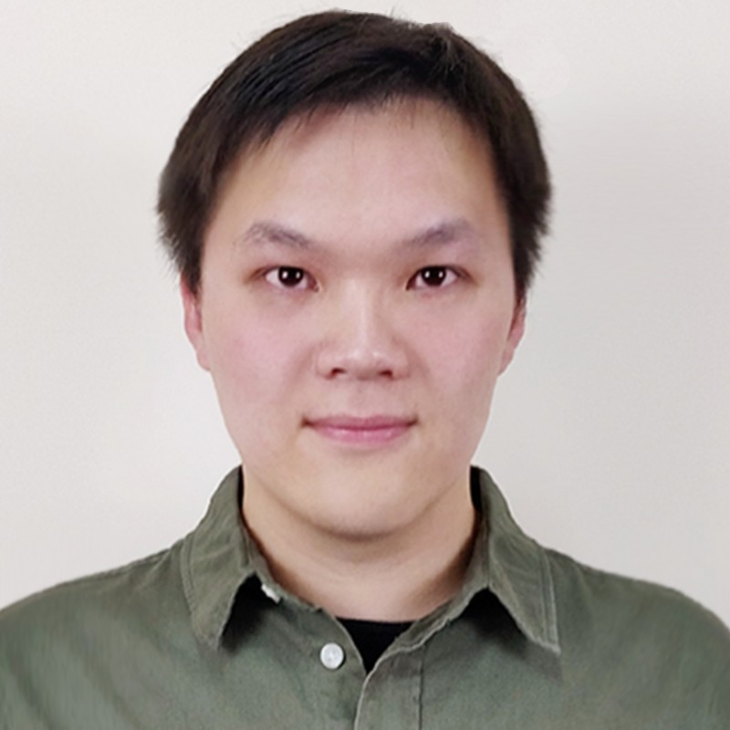

|

|
Hi, I'm Erwin!
I am an Associate Professor in the Department of Computer Science at Institute of Science Tokyo (Former TokyoTech).
I also serve as a Advisory Researcher at Shanda AI Research Tokyo.
Before that, I served as a Senior Researcher at Huawei Research Japan, a Visiting Professor at Carniege Mello University, a Guest Researcher at Keio Media Design, and a Research Fellow at Sony CSL.
I obtained my Ph.D. at Institute of Science Tokyo, advised by Prof. Hideki Koike.
And I've received my Bachelor in Computer Science (with honor, top 10%) at Shanghai Jiao Tong University.
My research interest lies in the field of Human-Computer Interaction, Machine Learning, and 3D Vision. My primary works include pose prediction for sports training, 3D body/hand pose estimation, and VR/AR visualizations for skill acquisition.
Email /
CV /
Google Scholar /
Linkedin
|
For a full list, please check my Google Scholar.
|
Awards
|
AIP Network Director Award, 6th JST CREST AIP Challenge Program, 2022
Seiichi Tejima Research Award, Tokyo Institute of Technology, 2021
AIP Network Director Award, 6th JST CREST AIP Challenge Program, 2021
Graduation with Honor: Excellent Undergraduate Graduates, Shanghai Jiao Tong University, 2017
Outstanding Exchange Student of Study in Kyoto Program, Ritsumeikan University, 2016
Excellent International Student Award, Shanghai Jiao Tong University, 2015
|
|
Invited Talks
|
Invited Talk about AIGC for Digital Human, Huawei Cloud, 2024
Invited Talk about BackHandPose at Miraikan, JSPS, 2022
Invited Talk about SolePoser, JST AIP Challenge, 2022
|
|
Academic Service
|
Session Chair, CHI 2025, 2023; SIGGRAPH Asia 2023;
Poster Chair, MVA 2023, 2025;
Area Chair, CHI 2025;
Reviewer for Journal: TMM, TVCG, CVIU
Reviewer for Conference: NeurIPS, CVPR, ICCV, ECCV, ACM MM, CHI, UIST, ISMAR, IEEE VR, SIGGRAPH
|
|
Patent
|
US Patent App. 63/089.139.
US Patent App. 68/084.140. (under review)
JP Patent JP2022062672A
JP Patent JP2022172499A
|
This website use the awesome template from Jon Barron.
|
|